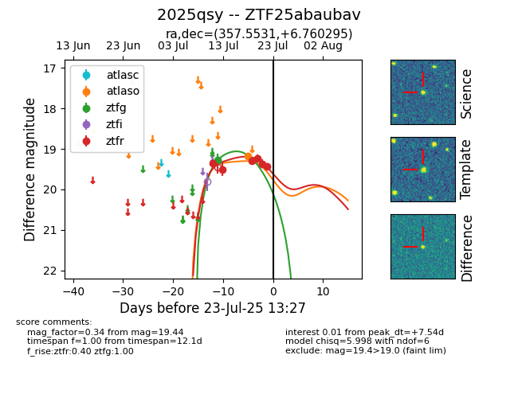

Target ZTF25abaubav at 2025-07-23 13:27, see:
FINK: fink-portal.org/ZTF25abaubav
Lasair: lasair-ztf.lsst.ac.uk/objects/ZTF25abaubav
ALeRCE: alerce.online/object/ZTF25abaubav
TNS: wis-tns.org/object/2025qsy
YSE: ziggy.ucolick.org/yse/transient_detail/2025qsy
alt names
ZTF25abaubav (ztf,fink)
2025qsy (tns,yse)
coordinates:
equatorial (ra, dec) = (357.5531,+6.76030)
galactic (l, b) = (97.1006,-53.01315)
photometry
last atlaso=19.18, ztfg=19.27, ztfr=19.44
1 atlaso, 2 ztfg, 6 ztfr detections
